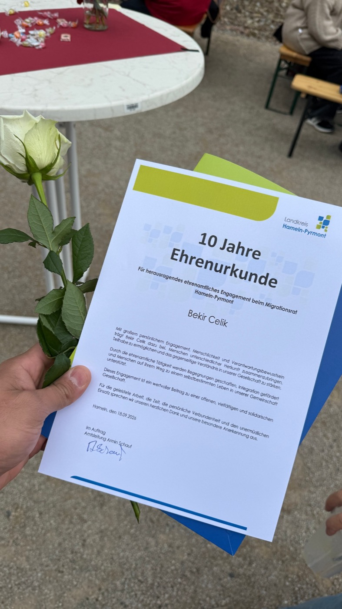
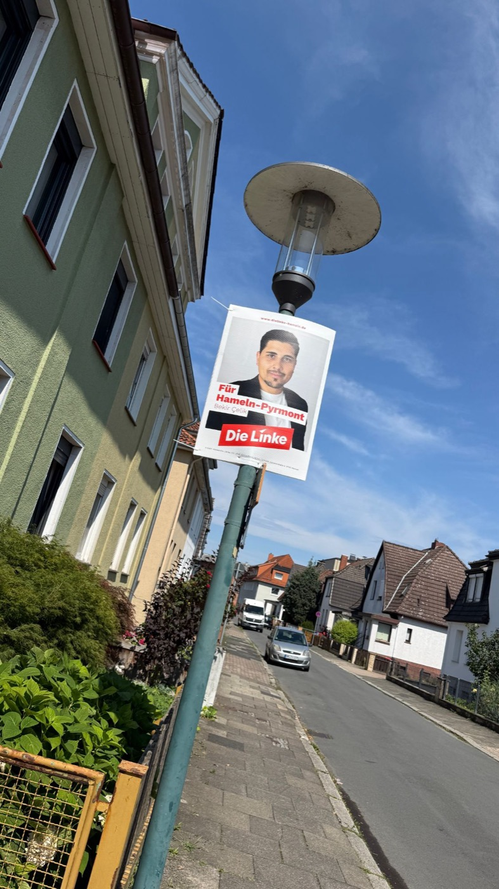
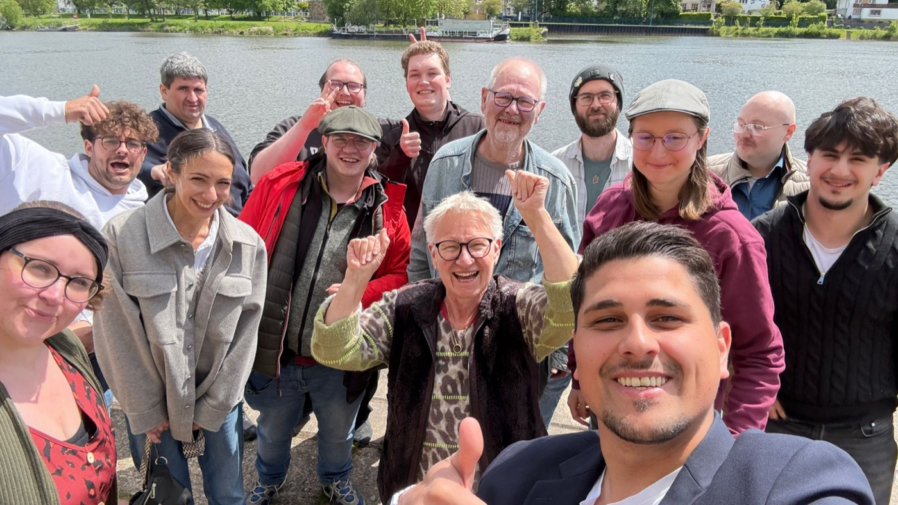

Familie
Familien verdienen echte Unterstützung. Ich setze mich ein für genug Kitaplätze, planbare Betreuung und gute Schulen.
Vorsitzender der Kreistagsfraktion Die Linke Hameln-Pyrmont
Schreib mir, was dich bewegtGeboren in Braunschweig, aufgewachsen in Hameln-Pyrmont und seit 2024 Vater.
Hameln-Pyrmont ist mein Zuhause: Hier lebe und arbeite ich, hier wachsen meine Zwillingstöchter auf. Genau deshalb mache ich Kommunalpolitik. Bei der letzten Wahl haben mir die Menschen im Landkreis ihr Vertrauen gegeben. Seitdem sitze ich im Kreistag und führe die Kreistagsfraktion Die Linke Hameln-Pyrmont als Vorsitzender.
Zur Schule gegangen bin ich in Hameln: Nach dem Realschulabschluss an der Theodor-Heuss-Realschule folgte der erweiterte Realschulabschluss im Bereich Wirtschaft an der Handelslehranstalt und schließlich die Fachhochschulreife in Medien und Gestaltung an der Eugen-Reintjes-Schule.
Schon früh habe ich mich im Bereich Marketing selbstständig gemacht und nebenbei viel gejobbt. Das Unternehmertum hat mich von da an begleitet: Über die Jahre habe ich mehrere Unternehmen und Franchise-Konzepte aufgebaut und geführt.
Zudem habe ich im Ausbau der Telekommunikations-Infrastruktur gearbeitet. Dort war ich für die Unternehmensstrategie und Organisationsentwicklung verantwortlich, später war ich in der gleichen Branche als Personal- und Dienstleistungsmanager tätig.
Das Thema Wohnen beschäftigt mich schon lange. Um die Probleme auf dem Wohnungsmarkt zu verstehen, habe ich die Zertifizierung zum Immobilienmakler (IHK) absolviert.
Mit der Geburt meiner Töchter haben sich meine Prioritäten verschoben: Ich habe die Unternehmen abgegeben, die Selbstständigkeit beendet und den Fokus auf meine Familie gelegt. Gleichzeitig reifte in mir der Entschluss, mich politisch einzubringen. Meine Überzeugung ist: Verstehen ist die Grundlage für jede echte Veränderung. In der Kommunalpolitik werden Entscheidungen getroffen, aber die Verwaltung muss sie am Ende umsetzen. Wer politisch wirklich etwas bewegen will, muss wissen, wie Behörden arbeiten. Genau deshalb mache ich heute eine Umschulung zum Verwaltungsfachangestellten, um diese Abläufe von innen kennenzulernen.
Ehrenamtlich aktiv bin ich schon seit meiner Schulzeit, ob als Schülersprecher, Streitschlichter, bei der Freiwilligen Feuerwehr oder 2011 als Erhebungsbeauftragter beim Zensus.
Seit 2016 engagiere ich mich intensiv im Migrationsrat des Landkreises Hameln-Pyrmont. 2023 kam die Arbeit als Sprachmittler für den Landkreis hinzu. Außerdem mache ich die Öffentlichkeitsarbeit für den Niedersächsischen Integrationsrat. Durch diese Aufgaben spreche ich jeden Tag mit unterschiedlichsten Menschen und nehme ihre realen Probleme direkt mit in die Politik.
Seit November 2025 bin ich Mitglied der Linken. Über den Listenplatz 1 zog ich in den Kreistag Hameln-Pyrmont ein, wo mich meine Fraktion kurz darauf zum Vorsitzenden wählte.
Zusätzlich vertrete ich die Kreisverbände Hildesheim und Hameln als Delegierter auf dem Bundesparteitag. Auf dem Landesparteitag Niedersachsen wurde ich zum Ersatzdelegierten für den Parteirat gewählt. Mein Ziel bei all diesen Aufgaben ist einfach: Was in der Politik entschieden wird, muss im Alltag der Menschen vor Ort spürbar ankommen.
Was ansteht und was zuletzt passiert ist.
Kommender Termin
15:00 Uhr, Forum, Mühlenstraße 16, Hameln. Mit dieser ersten Sitzung bin ich offiziell im Amt. Die Sitzung ist öffentlich.
Fraktion
Die Kreistagsfraktion Die Linke Hameln-Pyrmont hat mich zu ihrem Vorsitzenden gewählt.

Ehrung
Der Landkreis Hameln-Pyrmont hat mich für zehn Jahre ehrenamtliches Engagement im Migrationsrat ausgezeichnet.

Wahl
Bei der Kommunalwahl haben mir die Menschen in Hameln-Pyrmont ihr Vertrauen gegeben. Als Listenplatz 1 ziehe ich in den Kreistag ein.

Kandidatur
Unsere Liste ist zur Kommunalwahl zugelassen. Für Die Linke trete ich auf Listenplatz 1 für den Kreistag an.
Drei Themen, für die ich mich im Kreistag stark mache.
Familien verdienen echte Unterstützung. Ich setze mich ein für genug Kitaplätze, planbare Betreuung und gute Schulen.
Ohne starke Betriebe keine starke Region. Ich setze mich ein für gute Bedingungen für unsere Betriebe und Arbeitsplätze, die junge Leute hier halten.
Wohnen darf kein Luxus sein. Kreis und Stadt müssen nutzen, was sie haben: Flächen, Förderung, eigene Projekte.
Politik fängt für mich beim Zuhören an. Erzähl mir, was dich in Hameln-Pyrmont bewegt. Jede Nachricht lese ich selbst und nehme deine Anliegen mit in den Kreistag.